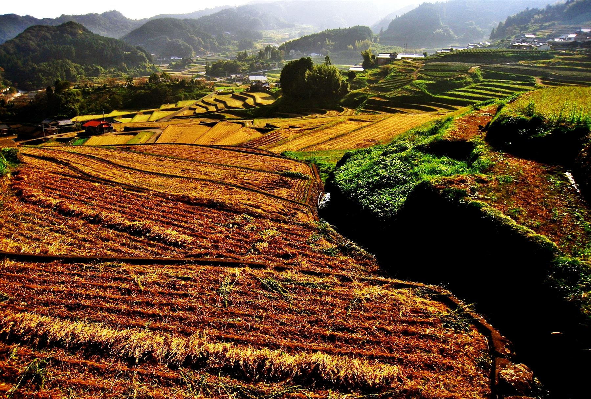
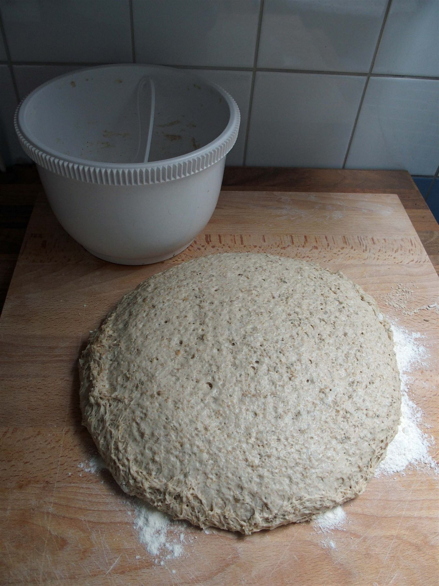

夜明け前
「つきあかり」という名前
太陽ではなく、月。朝焼けではなく、夜明け前の静けさ。「ぱんや つきあかり」という屋号には、そんな時間が流れているような気がします。宮城県登米市東和町、里山と水田に囲まれたこの場所に立つと、まるで月明かりに誘われるように、小さな灯りを頼りに歩いてきたくなる——そんな風景がこの店にはあります。由来を店主に直接尋ねたわけではありませんが、この土地と名前を重ねてみると、自然とそう思えてくるのです。
里山の窓から
里山に灯る、小さな窓
登米市東和町は、宮城県北部に広がる農村・里山のエリアです。大きな通りから少し入った先、田んぼと山並みに囲まれた場所に店を構えています。都市部の喧騒とは無縁の、静かな環境。車を停めてドアを開けた瞬間に感じる空気の澄み方や、あたりの静けさは、この立地だからこそのものだと思います。

灯りがともる頃
仕込みのこと
一つひとつ、ていねいに。詳しい製法やこだわりについては、現在準備中のためこのページでは詳しくご紹介できません。最新の情報や焼き上がりの様子は、Instagramにて随時お知らせしています。
